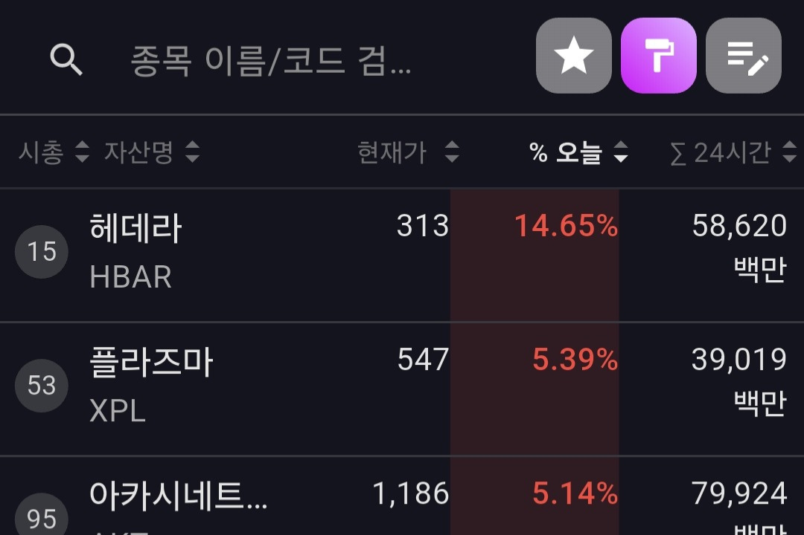

특정 기간 동안 가장 많이 오른 코인 알아내는 방법
단기간 급등한 종목을 빠르게 포착하고, 시간 단위별 상승률과 변동률을 확인할 수 있으며, 고급 설정을 통해 나만의 조건으로 시장 흐름을 세밀하게 탐색할 수 있습니다.
특정 기간 동안 가장 많이 떨어진 코인 알아내는 방법
단기간 하락한 종목을 빠르게 확인하고, 시간 단위별 하락률과 변동률을 체크할 수 있으며, 고급 설정을 통해 나만의 조건으로 세밀하게 탐색하고 정렬할 수 있습니다.

기간별로 누적 거래대금 알아내는 방법
거래대금 상위 종목을 확인하고, 시간 단위별 누적 거래대금을 살펴볼 수 있으며, 고급 설정을 통해 나만의 기간 기준으로 세밀하게 탐색하고 정렬할 수 있습니다.